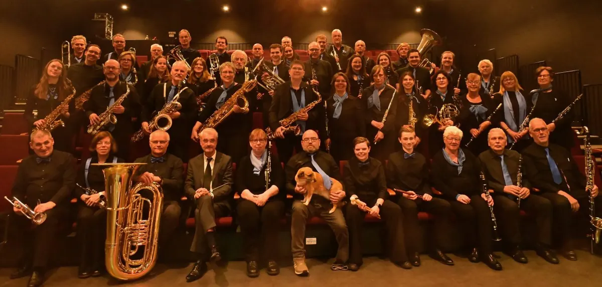
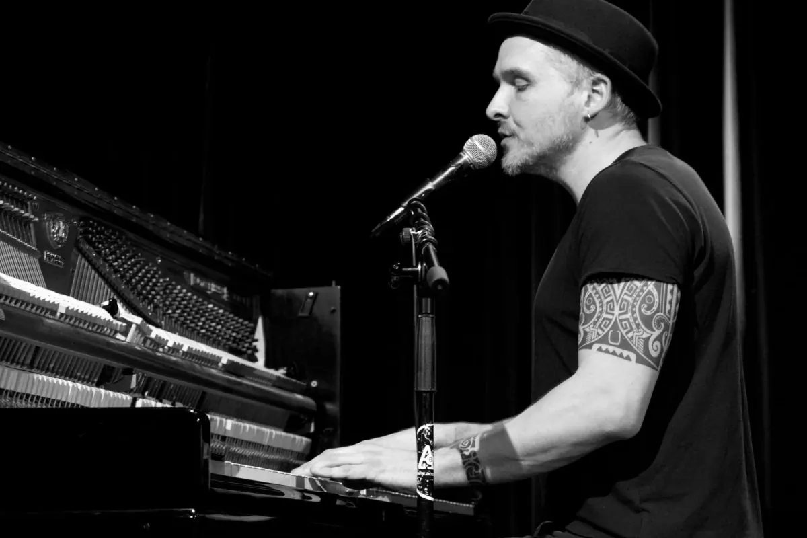
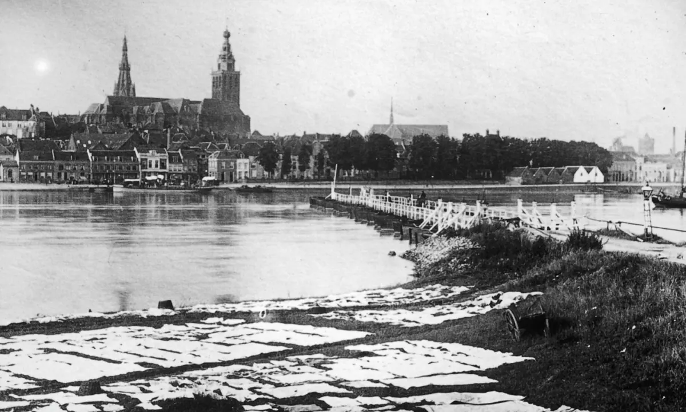

Evenement
Uitwisselingsconcert Harmonie Hatert met DOV Wijchen
- Wanneerzondag 25 oktober 2026, 13.00 tot 17.00 uur
- Waar
Molenveldlaan 146 6523 RN Nijmegen Route

Harmonie Hatert onderhoud al vele jaren een warme band met Harmonie DOV uit Wijchen.
Daarom organiseert Harmonie Hatert met deze Harmonie een uitwisselingsconcert.
Er zullen muziekstukken te beluisteren zijn van zeer uiteenlopende aard.
Denk aan film- musical- en popmuziek. Natuurlijk zijn er ook originele harmonie composities te beluisteren. Beide orkesten kijken uit naar een muzikale middag waarin zij hun eigen klank en speelplezier met elkaar én met het publiek delen. Het uitwisselingsconcert biedt daarnaast de kans om de muzikale veelzijdigheid van beide harmonieorkesten in één programma te ervaren.
Dat Harmonie Hatert een heel wisselend (en door het publiek gewaardeerd) repertoire heeft is inmiddels bekend. Dit vraagt om een uitbreiding van onze baritonsectie. Graag zouden wij meerdere personen verwelkomen om deze sectie te versterken. Dus bent (of kent) u een baritonnist(e) meld dit aan Harmonie Hatert.
Wij repeteren iedere donderdagavond in zaal Roomsch Leven aan de Heijendaalseweg van 20:00 uur tot 22:00 uur.
Kom gerust eens langs! U bent van harte welkom!
Volg ons op Facebook, zodat U tijdig op de hoogte bent van onze concerten.
Uitwisselingsconcert Harmonie Hatert met Harmonie DOV Wijchen
Zondag 25 oktober
Aanvang 15:00 uur
Wijkcentrum De Klif
Pijlpuntstraat 1
Nijmegen
Binnenkort in Nijmegen

UitgelichtSean Taylor24 okt, 20.00 uurDe Brauerij 25okt UitgelichtHighlight Tours in het Vrijheidsmuseum25 okt, 14.00 uurVrijheidsmuseum
27oktFilmvertoning: Het land van mijn ouders27 okt, 19.00 uurHuis van de Nijmeegse Geschiedenis
28okt
UitgelichtHighlight Tours in het Vrijheidsmuseum25 okt, 14.00 uurVrijheidsmuseum
27oktFilmvertoning: Het land van mijn ouders27 okt, 19.00 uurHuis van de Nijmeegse Geschiedenis
28okt
De Stevenskerk tot 159128 okt, 20.00 uurHuis van de Nijmeegse Geschiedenis